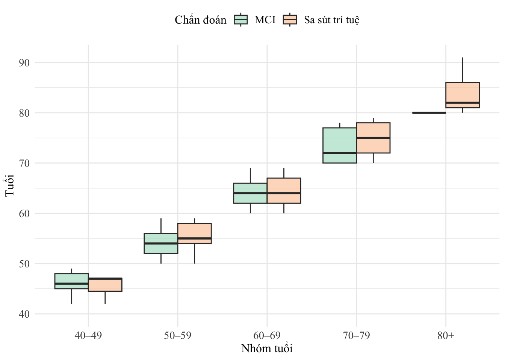
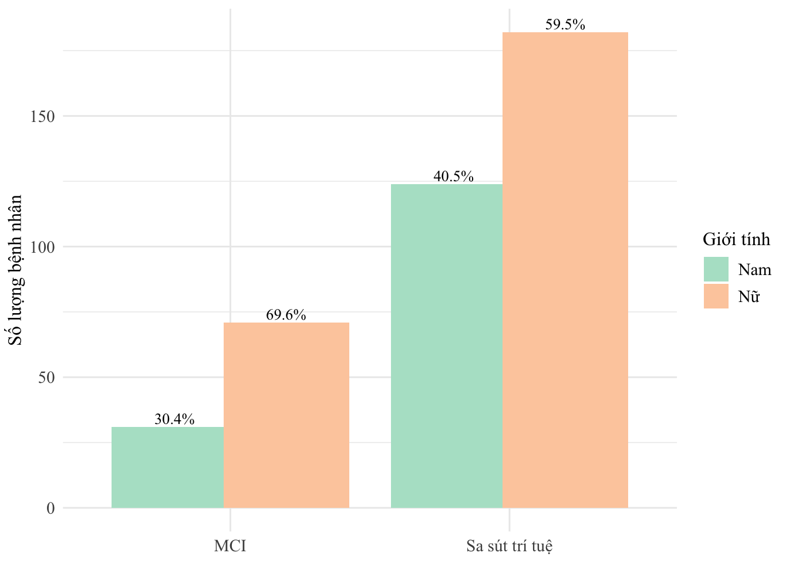
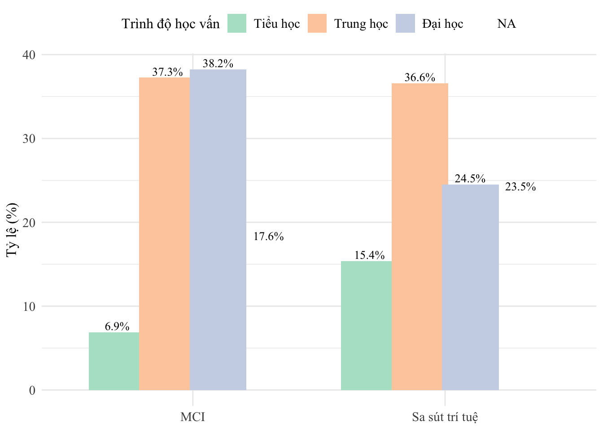
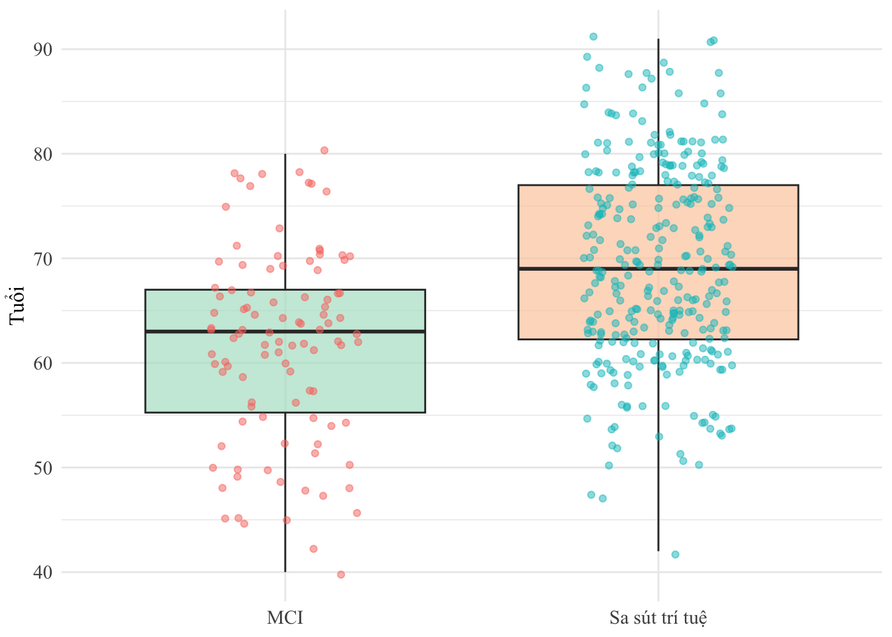

# thư viện
pacman::p_load(
dplyr, tidyr, readr, haven, labelled,
ggplot2, lubridate, glue, flextable,
officer, officedown, jpeg, png, grid,
tidyverse,purrr #
)ĐỀ TÀI CƠ SỞ SA SÚT TRÍ TUỆ
Neurocognitive tests
# Thiết lập mặc định cho tất cả flextable
set_flextable_defaults(
font.family = "Times New Roman", # optional: consistent font
font.size = 11,
align = "center",
padding = 3,
theme_fun = theme_booktabs,
layout = "autofit", # allows Word to adjust columns
width = 1 # 100% of page width
)
# Set global ggplot theme
theme_set(
theme_minimal(base_family = "Times New Roman") +
theme(
text = element_text(family = "Times New Roman"), # applies to all text
plot.title = element_text(hjust = 0.5, face = "bold", size = 14),
axis.title = element_text(size = 12),
axis.text = element_text(size = 11),
legend.text = element_text(size = 11),
legend.title = element_text(size = 11),
strip.text = element_text(size = 12) # for facet titles
)
)
# Globally override default color and fill palettes
scale_color_discrete <- function(...) scale_color_brewer(palette = "Set1", ...)
scale_fill_discrete <- function(...) scale_fill_brewer(palette = "Pastel2", ...)ft_vn <- function(df) {
flextable(df) %>%
colformat_num(decimal.mark = ",", big.mark = ".", na_str = "-") %>%
autofit()
}current_datetime <- now()
thu <- c("CHỦ NHẬT", "THỨ 2", "THỨ 3", "THỨ 4", "THỨ 5", "THỨ 6", "THỨ 7")[wday(current_datetime)]
gio <- format(current_datetime, "%H:%M")
ngay <- day(current_datetime)
thang <- month(current_datetime)
nam <- year(current_datetime)
formatted_datetime <- glue("vào {gio}, {thu}, NGÀY {ngay} THÁNG {thang} NĂM {nam}")LỜI NÓI ĐẦU
# Danh sách lời cảm ơn và màu chữ
messages <- c(
"Vợ và các con vì đã cho tôi tình yêu",
"Bố mẹ vì đã cho tôi cuộc đời",
"Thầy cô vì đã cho tôi kiến thức",
"Bạn bè vì đã cho tôi sự động viên",
"Đồng nghiệp vì đã hợp tác và giúp đỡ"
)
colors <- c("red", "blue", "green", "orange", "purple")
# Chọn ngẫu nhiên một câu + màu
msg <- sample(messages, 1)
color <- sample(colors, 1)
# Câu cảm ơn (font Segoe Print, size 16, màu ngẫu nhiên)
ft_msg <- ftext(
glue("Tôi xin chân thành cảm ơn {msg}."),
prop = fp_text(font.family = "Segoe Print", font.size = 16, color = color)
)
# Tên người ký (Segoe Print, size 16, không màu)
ft_name <- ftext(
"Đỗ Thanh Liêm",
prop = fp_text(font.family = "Segoe Print", font.size = 16)
)# fig-cap: Hình ảnh ngẫu nhiên
#| out-width: 4in
imgs <- list.files("images", pattern = "\\.(jpg|jpeg|png)$", full.names = TRUE)
img <- sample(imgs, 1)
ext <- tools::file_ext(img)
# Read and display image based on format
if (ext == "png") {
img_data <- png::readPNG(img)
} else {
img_data <- jpeg::readJPEG(img)
}
grid::grid.raster(img_data)
quotes <- c(
"The best way to predict the future is to invent it. – Alan Kay",
"Life is what happens when you're busy making other plans. – John Lennon",
"Do not dwell in the past, do not dream of the future, concentrate the mind on the present moment. – Buddha",
"Success is not final, failure is not fatal: It is the courage to continue that counts. – Winston Churchill",
"In the middle of difficulty lies opportunity. – Albert Einstein"
)
quote <- sample(quotes, 1)
# Print one line break before the table
cat("\n")ft <- flextable(data.frame(Quote = quote))
ft <- set_table_properties(ft, width = .75, layout = "autofit")
ft <- italic(ft, j = "Quote")
ft <- align(ft, align = "center", part = "all")
ft <- border_remove(ft)
ft <- padding(ft, padding = 6)
ft <- fontsize(ft, size = 16, part = "all")
ft <- color(ft, color = "blue", part = "all")
ftQuote |
|---|
Life is what happens when you're busy making other plans. – John Lennon |
# Print one line break after the table
cat("\n")TP Hồ Chí Minh: vào 21:45, THỨ 4, NGÀY 16 THÁNG 4 NĂM 2025
MÃ LỆNH
Setup dữ liệu
df_raw <- read_sav("sstt304_28_03_24.sav", encoding = "latin1")
write_csv(df_raw, "sstt304_clean.csv")#| label: Chọn bộ Test VnCo mới, và phân loại Sa sút trí tuệ theo tiêu chuẩn của MMSE
df <- read_csv("sstt304_clean.csv")
df <- df %>%
dplyr::filter(new.old.tests != 1, mmse.new <=29) %>%
drop_na(mmse.new)df <- df %>%
mutate(
# Tính năm khám và tuổi
year.visit = year(date.visit),
tuoi = year.visit - year.born,
# Giới tính
gender = case_when(
gender == 1 ~ "Nam",
gender == 2 ~ "Nữ",
TRUE ~ NA_character_
),
gender = factor(gender, levels = c("Nam", "Nữ")),
# Trình độ học vấn
edu = case_when(
edu.level == 1 ~ "Tiểu học",
edu.level %in% c(2, 3) ~ "Trung học",
edu.level == 4 ~ "Đại học",
TRUE ~ NA_character_
),
edu = factor(
edu,
levels = c("Tiểu học", "Trung học", "Đại học")
),
# Gán nhãn chẩn đoán
diagno = case_when(
diagno == 1 ~ "Suy giảm nhận thức nhẹ",
diagno == 2 ~ "Suy giảm nhận thức chủ quan",
diagno == 3 ~ "Alzheimer",
diagno == 4 ~ "Sa sút trí tuệ mạch máu",
diagno == 5 ~ "Sa sút trí tuệ thùy trán thái dương",
diagno == 7 ~ "Sa sút trí tuệ hỗn hợp",
diagno == 8 ~ "Sa sút trí tuệ do Parkinson",
diagno == 9 ~ "Sa sút trí tuệ khác",
TRUE ~ NA_character_
)
) %>%
# Lọc người ≥40 tuổi & loại bỏ "Suy giảm nhận thức chủ quan"
filter(tuoi >= 40, diagno != "Suy giảm nhận thức chủ quan") %>%
mutate(
# Phân nhóm tuổi
nhom_tuoi = case_when(
tuoi < 50 ~ "40–49",
tuoi < 60 ~ "50–59",
tuoi < 70 ~ "60–69",
tuoi < 80 ~ "70–79",
TRUE ~ "80+"
),
# Định nghĩa factor cho chẩn đoán
diagno = factor(
diagno,
levels = c(
"Suy giảm nhận thức nhẹ",
"Alzheimer",
"Sa sút trí tuệ mạch máu",
"Sa sút trí tuệ hỗn hợp",
"Sa sút trí tuệ thùy trán thái dương",
"Sa sút trí tuệ do Parkinson",
"Sa sút trí tuệ khác"
)
),
# Phân loại nhóm nhận thức: MCI vs Sa sút trí tuệ
phan_loan_roi_loan_nhan_thuc = case_when(
diagno == "Suy giảm nhận thức nhẹ" ~ "MCI",
!is.na(diagno) ~ "Sa sút trí tuệ"
),
phan_loan_roi_loan_nhan_thuc = factor(
phan_loan_roi_loan_nhan_thuc,
levels = c("MCI", "Sa sút trí tuệ")
),
mmse_group = case_when(
mmse.new == 30 ~ "Bình thường",
mmse.new >= 26 & mmse.new <= 29 ~ "Suy giảm nhận thức nhẹ hoặc nghi ngờ",
mmse.new >= 21 & mmse.new <= 25 ~ "Sa sút trí tuệ nhẹ",
mmse.new >= 11 & mmse.new <= 20 ~ "Sa sút trí tuệ trung bình",
mmse.new >= 0 & mmse.new <= 10 ~ "Sa sút trí tuệ nặng",
TRUE ~ NA_character_
),
mmse_group = factor(mmse_group, levels = c(
"Bình thường",
"Suy giảm nhận thức nhẹ hoặc nghi ngờ",
"Sa sút trí tuệ nhẹ",
"Sa sút trí tuệ trung bình",
"Sa sút trí tuệ nặng"
))
)Đặc điểm mẫu nghiên cứu
Đặc điểm theo tuổi
Bảng theo tuổi
# Tính trung bình cho tuổi chèn inline codes
mean_age <- round(mean(df$age, na.rm = TRUE), 1)
sd_age <- round(sd(df$age, na.rm = TRUE), 1)
glue::glue("Tuổi trung bình: {mean_age} ± {sd_age} tuổi")Tuổi trung bình: 67.1 ± 10.6 tuổiage_summary_by_group <- df %>%
filter(!is.na(age), !is.na(phan_loan_roi_loan_nhan_thuc)) %>%
group_by(phan_loan_roi_loan_nhan_thuc) %>%
summarise(
mean_age = round(mean(age, na.rm = TRUE), 1),
sd_age = round(sd(age, na.rm = TRUE), 1),
.groups = "drop"
)
# Lấy kết quả cho từng nhóm
mci <- age_summary_by_group %>% filter(phan_loan_roi_loan_nhan_thuc == "MCI")
ssd <- age_summary_by_group %>% filter(phan_loan_roi_loan_nhan_thuc == "Sa sút trí tuệ")
# In dạng glue
glue("Tuổi trung bình nhóm MCI: {mci$mean_age} ± {mci$sd_age} tuổi")Tuổi trung bình nhóm MCI: 59.5 ± 9 tuổiglue("Tuổi trung bình nhóm Sa sút trí tuệ: {ssd$mean_age} ± {ssd$sd_age} tuổi")Tuổi trung bình nhóm Sa sút trí tuệ: 70 ± 9.7 tuổi# 1. Tính các chỉ số mô tả
table_tuoi <- df %>%
group_by(phan_loan_roi_loan_nhan_thuc) %>%
summarise(
`Trung bình ± SD` = sprintf("%.1f ± %.1f", mean(tuoi, na.rm = TRUE), sd(tuoi, na.rm = TRUE)),
`Trung vị (Q1–Q3)` = sprintf("%.1f (%s–%s)",
median(tuoi, na.rm = TRUE),
quantile(tuoi, 0.25, na.rm = TRUE),
quantile(tuoi, 0.75, na.rm = TRUE)),
`Min – Max` = sprintf("%d – %d", min(tuoi, na.rm = TRUE), max(tuoi, na.rm = TRUE)),
.groups = "drop"
) %>%
pivot_longer(-phan_loan_roi_loan_nhan_thuc, names_to = "Chỉ số", values_to = "Giá trị") %>%
pivot_wider(names_from = phan_loan_roi_loan_nhan_thuc, values_from = "Giá trị")
# 2. Tính p-value
p_val <- t.test(tuoi ~ phan_loan_roi_loan_nhan_thuc, data = df)$p.value
# 3. Thêm cột p-value cho mỗi chỉ số
final_table <- table_tuoi %>%
mutate(`Giá trị p` = if_else(`Chỉ số` == "Trung bình ± SD", sprintf("%.3f", p_val), ""))
# 4. Tạo bảng flextable
ft_tuoi <- flextable(final_table) %>%
autofit() %>%
align(align = "center", part = "all") %>%
bold(i = 1, part = "header") %>%
set_caption("Bảng: So sánh tuổi giữa các nhóm nhận thức (có cột riêng cho p-value)") %>%colformat_num(decimal.mark = ",", big.mark = ".", na_str = "-") %>%
set_table_properties(width = 1, layout = "autofit")Chỉ số | MCI | Sa sút trí tuệ | Giá trị p |
|---|---|---|---|
Trung bình ± SD | 61.7 ± 9.2 | 69.3 ± 9.5 | 0.000 |
Trung vị (Q1–Q3) | 63.0 (55.25–67) | 69.0 (62.25–77) | |
Min – Max | 40 – 80 | 42 – 91 |
Bảng theo nhóm tuổi
# Bước 1: Đảm bảo đúng thứ tự nhóm tuổi
df$nhom_tuoi <- factor(df$nhom_tuoi, levels = c("40–49", "50–59", "60–69", "70–79", "80+"))
# Bước 2: Tạo bảng tần số và phần trăm theo chẩn đoán và nhóm tuổi
table_freq <- df %>%
count(phan_loan_roi_loan_nhan_thuc, nhom_tuoi) %>%
group_by(phan_loan_roi_loan_nhan_thuc) %>%
mutate(percent = n / sum(n) * 100) %>%
ungroup() %>%
mutate(`Tần số (%)` = sprintf("%d (%.1f%%)", n, percent)) %>%
select(`Chẩn đoán` = phan_loan_roi_loan_nhan_thuc, `Nhóm tuổi` = nhom_tuoi, `Tần số (%)`) %>%
pivot_wider(
names_from = `Nhóm tuổi`,
values_from = `Tần số (%)`,
values_fill = "-"
)
# Bước 3: Tính p-value từ bảng tần số
chisq_data <- table(df$phan_loan_roi_loan_nhan_thuc, df$nhom_tuoi)
p_val <- chisq.test(chisq_data)$p.valueWarning in chisq.test(chisq_data): Chi-squared approximation may be incorrectformatted_p <- ifelse(p_val < 0.001, "< 0.001", sprintf("%.3f", p_val))
# Thêm cột "Giá trị p" vào dòng đầu tiên
table_freq$`Giá trị p` <- c(formatted_p, rep("", nrow(table_freq) - 1))
# Bước 4: Tạo bảng flextable và tô đậm nếu p < 0.05
ft_freq_p <- flextable(table_freq) %>%
autofit() %>%
align(align = "center", part = "all") %>%
bold(i = 1, part = "header") %>%
bold(i = which(
table_freq$`Giá trị p` != "" &
table_freq$`Giá trị p` != "-" &
as.numeric(gsub("< ", "", table_freq$`Giá trị p`)) < 0.05
),
j = "Giá trị p", part = "body") %>%
set_caption("Bảng: Tần số và tỷ lệ phần trăm nhóm tuổi theo chẩn đoán (tô đậm nếu p < 0.05)")ft_freq_pChẩn đoán | 40–49 | 50–59 | 60–69 | 70–79 | 80+ | Giá trị p |
|---|---|---|---|---|---|---|
MCI | 13 (12.7%) | 21 (20.6%) | 47 (46.1%) | 20 (19.6%) | 1 (1.0%) | < 0.001 |
Sa sút trí tuệ | 3 (1.0%) | 38 (12.4%) | 122 (39.9%) | 96 (31.4%) | 47 (15.4%) |
Biểu đồ theo tuổi
tuoi_gp <- ggplot(df, aes(x = phan_loan_roi_loan_nhan_thuc, y = tuoi, fill = phan_loan_roi_loan_nhan_thuc)) +
geom_boxplot(outlier.shape = NA, alpha = 0.7) +
geom_jitter(
aes(color = phan_loan_roi_loan_nhan_thuc),
width = 0.2, size = 1.5, alpha = 0.5
) +
labs(
x = NULL,
y = "Tuổi"
) +
theme_minimal(base_family = "Times New Roman") +
theme(
legend.position = "none",
axis.title = element_text(size = 12),
axis.text = element_text(size = 11)
)tuoi_gp
Biểu đồ theo nhóm tuổi
df$nhom_tuoi <- factor(df$nhom_tuoi, levels = c("40–49", "50–59", "60–69", "70–79", "80+"))
nhom_tuoi_gp <- ggplot(df, aes(x = nhom_tuoi, y = tuoi, fill = phan_loan_roi_loan_nhan_thuc)) +
geom_boxplot(outlier.shape = NA, alpha = 0.7, position = position_dodge(width = 0.75)) +
labs(
x = "Nhóm tuổi",
y = "Tuổi",
fill = "Chẩn đoán"
) +
theme_minimal(base_family = "Times New Roman") +
theme(
text = element_text(family = "Times New Roman"), # <- ensures all text uses Times
plot.title = element_text(hjust = 0.5, face = "bold", size = 14),
axis.title = element_text(size = 12),
axis.text = element_text(size = 11),
legend.title = element_text(size = 12),
legend.text = element_text(size = 11),
legend.position = "top"
)nhom_tuoi_gp
Đặc điểm giới tính
# Tóm tắt dữ liệu giới tính theo nhóm nhận thức
gioitinh_summary <- df %>%
count(phan_loan_roi_loan_nhan_thuc, gender) %>%
group_by(phan_loan_roi_loan_nhan_thuc) %>%
mutate(percent = n / sum(n) * 100) %>%
ungroup()
# Bảng flextable: tần số + % + p-value
table_gender <- gioitinh_summary %>%
mutate(`Tần số (%)` = sprintf("%d (%.1f%%)", n, percent)) %>%
select(`Chẩn đoán` = phan_loan_roi_loan_nhan_thuc, `Giới tính` = gender, `Tần số (%)`) %>%
pivot_wider(
names_from = `Giới tính`,
values_from = `Tần số (%)`,
values_fill = "-"
)
# Tính p-value (Chi-squared test)
chisq_gender <- table(df$phan_loan_roi_loan_nhan_thuc, df$gender)
p_val_gender <- chisq.test(chisq_gender)$p.value
formatted_p_gender <- ifelse(p_val_gender < 0.001, "< 0.001", sprintf("%.3f", p_val_gender))
# Thêm dòng p-value
table_gender$`Giá trị p` <- c(formatted_p_gender, rep("", nrow(table_gender) - 1))
# Bảng flextable hoàn chỉnh
ft_gender <- flextable(table_gender) %>%
autofit() %>%
align(align = "center", part = "all") %>%
bold(i = 1, part = "header") %>%
bold(i = which(
table_gender$`Giá trị p` != "" &
table_gender$`Giá trị p` != "-" &
as.numeric(gsub("< ", "", table_gender$`Giá trị p`)) < 0.05
),
j = "Giá trị p", part = "body") %>%
set_caption("Bảng: Phân bố giới tính theo nhóm nhận thức (tô đậm nếu p < 0.05)") %>%
font(fontname = "Times New Roman", part = "all") %>%
fontsize(size = 11, part = "all") %>%
set_table_properties(width = 1, layout = "autofit") # 🔥 Fit to Word page
# Biểu đồ ggplot: số lượng + % hiển thị trên cột
gioitinh_bar_percent <- ggplot(gioitinh_summary, aes(x = phan_loan_roi_loan_nhan_thuc, y = n, fill = gender)) +
geom_bar(stat = "identity", position = position_dodge(width = 0.8)) +
geom_text(
aes(label = sprintf("%.1f%%", percent)),
position = position_dodge(width = 0.8),
vjust = -0.3,
size = 3.5,
family = "Times New Roman"
) +
labs(
#title = "Phân bố giới tính theo nhóm nhận thức",
x = NULL,
y = "Số lượng bệnh nhân",
fill = "Giới tính"
) +
theme_minimal(base_family = "Times New Roman") +
theme(
plot.title = element_text(hjust = 0.5, face = "bold", size = 14),
axis.title = element_text(size = 12),
axis.text = element_text(size = 11),
legend.title = element_text(size = 12),
legend.text = element_text(size = 11)
)-Inline codes giới tính
# 1. Tóm tắt tỷ lệ nữ theo nhóm nhận thức
gender_summary <- df %>%
count(phan_loan_roi_loan_nhan_thuc, gender) %>%
group_by(phan_loan_roi_loan_nhan_thuc) %>%
mutate(percent = n / sum(n) * 100) %>%
ungroup() %>%
filter(gender == "Nữ") # chỉ lấy tỷ lệ nữ
# 2. Hàm an toàn lấy phần trăm nữ cho từng nhóm
lay_phan_tram_nu <- function(nhom) {
ket_qua <- gender_summary %>%
filter(phan_loan_roi_loan_nhan_thuc == nhom) %>%
pull(percent)
if (length(ket_qua) == 0) return(0) else return(round(ket_qua, 1))
}
# 3. Lấy phần trăm nữ theo nhóm
nu_mci <- lay_phan_tram_nu("MCI")
nu_sstt <- lay_phan_tram_nu("Sa sút trí tuệ")
# 4. Tính p-value từ kiểm định giới tính ~ nhóm nhận thức
p_gender <- chisq.test(table(df$phan_loan_roi_loan_nhan_thuc, df$gender))$p.value
# 5. Diễn giải theo p-value
dien_giai_gt <- ifelse(
p_gender > 0.05,
glue("Sự khác biệt không có ý nghĩa thống kê với p = {sprintf('%.3f', p_gender)}."),
glue("Sự khác biệt có ý nghĩa thống kê với p = {sprintf('%.3f', p_gender)}.")
)
# 6. Câu mô tả cuối cùng (để dùng inline)
cau_gioitinh_mota <- glue::glue(
"Trong nghiên cứu này, ở nhóm Suy giảm nhận thức nhẹ, nữ giới chiếm {nu_mci}%. ",
"Ở nhóm Sa sút trí tuệ, nữ giới chiếm {nu_sstt}%. ",
"{dien_giai_gt}"
)- Bảng theo giới tính
ft_genderChẩn đoán | Nam | Nữ | Giá trị p |
|---|---|---|---|
MCI | 31 (30.4%) | 71 (69.6%) | 0.088 |
Sa sút trí tuệ | 124 (40.5%) | 182 (59.5%) |
- Biểu đồ theo giới tính
gioitinh_bar_percent
Đặc điểm trình độ học vấn
Set up tóm tắt trình độ học vấn theo nhóm nhận thức
hocvan_summary <- df %>%
count(phan_loan_roi_loan_nhan_thuc, edu) %>%
group_by(phan_loan_roi_loan_nhan_thuc) %>%
mutate(percent = n / sum(n) * 100) %>%
ungroup()
# Bảng flextable: Tần số (%) + p-value
table_edu <- hocvan_summary %>%
mutate(`Tần số (%)` = sprintf("%d (%.1f%%)", n, percent)) %>%
select(`Chẩn đoán` = phan_loan_roi_loan_nhan_thuc, `Trình độ học vấn` = edu, `Tần số (%)`) %>%
pivot_wider(
names_from = `Trình độ học vấn`,
values_from = `Tần số (%)`,
values_fill = "-"
)
# Tính p-value (Chi-squared hoặc Fisher)
chisq_edu <- table(df$phan_loan_roi_loan_nhan_thuc, df$edu)
use_fisher <- any(chisq_edu < 5)
p_val_edu <- if (use_fisher) fisher.test(chisq_edu)$p.value else chisq.test(chisq_edu)$p.value
formatted_p_edu <- ifelse(p_val_edu < 0.001, "< 0.001", sprintf("%.3f", p_val_edu))
# Thêm dòng p-value
table_edu$`Giá trị p` <- c(formatted_p_edu, rep("", nrow(table_edu) - 1))
# Tạo bảng flextable
ft_edu <- flextable(table_edu) %>%
autofit() %>%
align(align = "center", part = "all") %>%
bold(i = 1, part = "header") %>%
bold(i = which(
table_edu$`Giá trị p` != "" &
table_edu$`Giá trị p` != "-" &
as.numeric(gsub("< ", "", table_edu$`Giá trị p`)) < 0.05
),
j = "Giá trị p", part = "body") %>%
set_caption("Bảng: Phân bố trình độ học vấn theo nhóm nhận thức (tô đậm nếu p < 0.05)") %>%
font(fontname = "Times New Roman", part = "all") %>%
fontsize(size = 11, part = "all") %>%
set_table_properties(width = 1, layout = "autofit")Bảng trình độ học vấn
ft_eduChẩn đoán | Tiểu học | Trung học | Đại học | NA | Giá trị p |
|---|---|---|---|---|---|
MCI | 7 (6.9%) | 38 (37.3%) | 39 (38.2%) | 18 (17.6%) | 0.013 |
Sa sút trí tuệ | 47 (15.4%) | 112 (36.6%) | 75 (24.5%) | 72 (23.5%) |
Setup biểu đồ trình độ học vấn
hocvan_bar_percent <- ggplot(hocvan_summary, aes(x = phan_loan_roi_loan_nhan_thuc, y = percent, fill = edu)) +
geom_col(position = position_dodge(width = 0.8)) +
geom_text(
aes(label = sprintf("%.1f%%", percent)),
position = position_dodge(width = 0.8),
vjust = -0.3,
size = 3.5,
family = "Times New Roman"
) +
labs(
x = NULL,
y = "Tỷ lệ (%)",
fill = "Trình độ học vấn"
) +
theme_minimal(base_family = "Times New Roman") +
theme(
axis.title = element_text(size = 12),
axis.text = element_text(size = 11),
legend.title = element_text(size = 12),
legend.text = element_text(size = 11),
legend.position = "top"
)Biểu đồ trình độ học vấn
hocvan_bar_percent
Setup trình độ học vấn inline codes
# Hàm inline mô tả trình độ học vấn
lay_tyle_hocvan <- function(nhom, bac) {
ket_qua <- hocvan_summary %>%
filter(phan_loan_roi_loan_nhan_thuc == nhom, edu == bac) %>%
pull(percent)
if (length(ket_qua) == 0) return(0) else return(round(ket_qua, 1))
}
hv_mci_tieu <- lay_tyle_hocvan("MCI", "Tiểu học")
hv_mci_trung <- lay_tyle_hocvan("MCI", "Trung học")
hv_mci_daihoc <- lay_tyle_hocvan("MCI", "Đại học")
hv_sstt_tieu <- lay_tyle_hocvan("Sa sút trí tuệ", "Tiểu học")
hv_sstt_trung <- lay_tyle_hocvan("Sa sút trí tuệ", "Trung học")
hv_sstt_daihoc <- lay_tyle_hocvan("Sa sút trí tuệ", "Đại học")
dien_giai_edu <- ifelse(
p_val_edu < 0.05,
glue("Sự khác biệt có ý nghĩa thống kê với p = {formatted_p_edu}."),
glue("Sự khác biệt không có ý nghĩa thống kê với p = {formatted_p_edu}.")
)
cau_hocvan_mota <- glue::glue(
"Trong nghiên cứu này, ở nhóm Suy giảm nhận thức nhẹ, tỷ lệ trình độ học vấn Tiểu học, Trung học, Đại học lần lượt là {hv_mci_tieu}%, {hv_mci_trung}%, {hv_mci_daihoc}%. ",
"Ở nhóm Sa sút trí tuệ, các tỷ lệ tương ứng là {hv_sstt_tieu}%, {hv_sstt_trung}%, {hv_sstt_daihoc}%. ",
"{dien_giai_edu}"
)Diễn giải inline codes nhận xét ##### Trong nghiên cứu này, ở nhóm Suy giảm nhận thức nhẹ, tỷ lệ trình độ học vấn Tiểu học, Trung học, Đại học lần lượt là 6.9%, 37.3%, 38.2%. Ở nhóm Sa sút trí tuệ, các tỷ lệ tương ứng là 15.4%, 36.6%, 24.5%. Sự khác biệt có ý nghĩa thống kê với p = 0.013.
Diễn giải sự khác biệt có (không ý nghĩa thống kê ) Sự khác biệt có ý nghĩa thống kê với p = 0.013.
Hiển thị bảng và biểu đồ
Chẩn đoán | Tiểu học | Trung học | Đại học | NA | Giá trị p |
|---|---|---|---|---|---|
MCI | 7 (6.9%) | 38 (37.3%) | 39 (38.2%) | 18 (17.6%) | 0.013 |
Sa sút trí tuệ | 47 (15.4%) | 112 (36.6%) | 75 (24.5%) | 72 (23.5%) |
hocvan_bar_percent
cau_hocvan_motaTrong nghiên cứu này, ở nhóm Suy giảm nhận thức nhẹ, tỷ lệ trình độ học vấn Tiểu học, Trung học, Đại học lần lượt là 6.9%, 37.3%, 38.2%. Ở nhóm Sa sút trí tuệ, các tỷ lệ tương ứng là 15.4%, 36.6%, 24.5%. Sự khác biệt có ý nghĩa thống kê với p = 0.013.Tạo khối lệnh mmse
# Tạo bảng tần suất MMSE
tab_mmse <- df %>%
count(mmse_group, name = "n") %>%
mutate(
percent = round(100 * n / sum(n), 1),
`Số lượng (Tỷ lệ %)` = glue("{n} ({percent}%)")
) %>%
select(`Phân độ MMSE` = mmse_group, `Số lượng (Tỷ lệ %)`)
# Bảng flextable fit Word
ft_mmse <- flextable(tab_mmse) %>%
set_header_labels(`Phân độ MMSE` = "Phân độ MMSE") %>%
autofit() %>%
set_table_properties(width = 1, layout = "autofit")
# Biểu đồ ggplot2
tab_mmse <- df %>%
count(mmse_group, name = "n") %>%
mutate(`Số lượng (Tỷ lệ %)` = glue("{n} ({round(100 * n / sum(n), 1)}%)"))
ggplot_mmse <- ggplot(tab_mmse, aes(x = mmse_group, y = n, fill = mmse_group)) +
geom_col() +
geom_text(aes(label = `Số lượng (Tỷ lệ %)`), vjust = -0.5) +
labs(x = "Phân độ MMSE", y = "Số lượng") +
theme_minimal() +
theme(
axis.text.x = element_text(angle = 45, hjust = 1),
legend.position = "none"
)
# Inline nhóm phổ biến nhất
most_common <- tab_mmse %>%
mutate(n = as.numeric(gsub(" \\(.*", "", `Số lượng (Tỷ lệ %)`))) %>%
slice_max(order_by = n, n = 1)Bảng phân loại mmse
ggplot_mmse
Biểu đồ phân loại mmse
ft_mmsePhân độ MMSE | Số lượng (Tỷ lệ %) |
|---|---|
Suy giảm nhận thức nhẹ hoặc nghi ngờ | 85 (20.8%) |
Sa sút trí tuệ nhẹ | 102 (25%) |
Sa sút trí tuệ trung bình | 162 (39.7%) |
Sa sút trí tuệ nặng | 59 (14.5%) |
Inline codes phân loại mmse
Đặc điểm các test nhận thức
# Biến cần mô tả
neuro_vars <- c(
"mmse.new", "Im.recall1", "de.recall1", "de.reg1",
"TMT.A.time", "TMT.B.time", "DS.forward1", "DS.backrward1",
"animal.test1", "clock.drawing1"
)
# Nhãn các test
test_labels <- c(
"MMSE", "Nhớ lại ngay", "Nhớ lại có trì hoãn", "Nhận biết có trì hoãn",
"Nối số", "Nối số-chữ", "Đọc chuỗi số xuôi", "Đọc chuỗi số ngược",
"Lưu loát ngôn ngữ", "Vẽ đồng hồ"
)
names(test_labels) <- neuro_vars
# Tổng hợp bảng
summary_table <- map_dfr(neuro_vars, function(var) {
df_sub <- df %>%
select(phan_loan_roi_loan_nhan_thuc, !!sym(var)) %>%
filter(!is.na(!!sym(var)))
# Tính p-value so sánh giữa 2 nhóm
p_val <- tryCatch(
t.test(!!sym(var) ~ phan_loan_roi_loan_nhan_thuc, data = df_sub)$p.value,
error = function(e) NA_real_
)
formatted_p <- ifelse(is.na(p_val), "-", ifelse(p_val < 0.001, "< 0.001", sprintf("%.3f", p_val)))
# Tóm tắt thống kê
stats <- df_sub %>%
group_by(phan_loan_roi_loan_nhan_thuc) %>%
summarise(
`Trung bình ± SD` = sprintf("%.1f ± %.1f", mean(!!sym(var)), sd(!!sym(var))),
`Trung vị (Q1–Q3)` = sprintf("%.1f (%.1f–%.1f)",
median(!!sym(var)),
quantile(!!sym(var), 0.25),
quantile(!!sym(var), 0.75)),
`Min – Max` = sprintf("%.1f – %.1f", min(!!sym(var)), max(!!sym(var))),
N = as.character(n()),
.groups = "drop"
) %>%
pivot_longer(-phan_loan_roi_loan_nhan_thuc,
names_to = "Chỉ số", values_to = "Giá trị") %>%
pivot_wider(names_from = phan_loan_roi_loan_nhan_thuc,
values_from = "Giá trị") %>%
mutate(
`Các tests` = test_labels[[var]],
`Giá trị p` = if_else(`Chỉ số` == "Trung bình ± SD", formatted_p, "")
) %>%
select(`Các tests`, everything())
stats
})
# Tạo bảng flextable có p-value
ft_neuro <- flextable(summary_table) %>%
merge_v(j = "Các tests") %>%
align(align = "center", part = "all") %>%
set_table_properties(width = 1, layout = "autofit") %>%
fontsize(size = 11, part = "all") %>%
font(fontname = "Times New Roman", part = "all") %>%
bold(i = 1, part = "header") %>%
set_caption("Bảng: Mô tả các test thần kinh nhận thức theo nhóm chẩn đoán, kèm kiểm định t-test")ft_neuroCác tests | Chỉ số | MCI | Sa sút trí tuệ | Giá trị p |
|---|---|---|---|---|
MMSE | Trung bình ± SD | 26.0 ± 1.9 | 16.3 ± 6.2 | - |
Trung vị (Q1–Q3) | 26.0 (25.0–27.0) | 17.0 (12.0–21.0) | ||
Min – Max | 20.0 – 29.0 | 2.0 – 29.0 | ||
N | 102 | 306 | ||
Nhớ lại ngay | Trung bình ± SD | 16.9 ± 4.0 | 9.2 ± 5.6 | - |
Trung vị (Q1–Q3) | 17.0 (14.0–20.0) | 9.0 (5.0–13.0) | ||
Min – Max | 9.0 – 26.0 | 0.0 – 26.0 | ||
N | 101 | 299 | ||
Nhớ lại có trì hoãn | Trung bình ± SD | 5.2 ± 2.5 | 1.3 ± 2.1 | - |
Trung vị (Q1–Q3) | 5.0 (4.0–7.0) | 0.0 (0.0–2.0) | ||
Min – Max | 0.0 – 10.0 | 0.0 – 10.0 | ||
N | 101 | 299 | ||
Nhận biết có trì hoãn | Trung bình ± SD | 7.9 ± 2.1 | 3.5 ± 3.3 | - |
Trung vị (Q1–Q3) | 8.0 (7.0–10.0) | 3.0 (0.0–6.0) | ||
Min – Max | 2.0 – 10.0 | 0.0 – 10.0 | ||
N | 101 | 298 | ||
Nối số | Trung bình ± SD | 87.2 ± 42.1 | 107.4 ± 41.6 | - |
Trung vị (Q1–Q3) | 77.0 (54.8–108.0) | 103.0 (78.2–139.5) | ||
Min – Max | 33.0 – 180.0 | 15.0 – 180.0 | ||
N | 98 | 122 | ||
Nối số-chữ | Trung bình ± SD | 180.6 ± 61.1 | 208.8 ± 76.4 | - |
Trung vị (Q1–Q3) | 181.0 (131.5–210.8) | 250.0 (130.0–270.0) | ||
Min – Max | 70.0 – 300.0 | 95.0 – 300.0 | ||
N | 36 | 17 | ||
Đọc chuỗi số xuôi | Trung bình ± SD | 8.4 ± 2.1 | 6.2 ± 2.6 | - |
Trung vị (Q1–Q3) | 8.0 (7.0–10.0) | 6.0 (5.0–8.0) | ||
Min – Max | 3.0 – 12.0 | 0.0 – 12.0 | ||
N | 101 | 301 | ||
Đọc chuỗi số ngược | Trung bình ± SD | 5.1 ± 2.1 | 2.9 ± 2.0 | - |
Trung vị (Q1–Q3) | 5.0 (4.0–6.0) | 3.0 (2.0–4.0) | ||
Min – Max | 0.0 – 12.0 | 0.0 – 11.0 | ||
N | 101 | 301 | ||
Lưu loát ngôn ngữ | Trung bình ± SD | 17.0 ± 5.3 | 9.6 ± 5.6 | - |
Trung vị (Q1–Q3) | 16.0 (13.0–20.0) | 9.0 (6.0–13.0) | ||
Min – Max | 7.0 – 31.0 | 0.0 – 29.0 | ||
N | 101 | 301 | ||
Vẽ đồng hồ | Trung bình ± SD | 1.8 ± 0.9 | 3.7 ± 1.7 | - |
Trung vị (Q1–Q3) | 2.0 (1.0–2.0) | 4.0 (2.0–5.0) | ||
Min – Max | 1.0 – 5.0 | 0.0 – 6.0 | ||
N | 99 | 301 |
ĐẶT VẤN ĐỀ
Việt Nam là một trong các quốc gia có tốc độ già hóa dân số nhanh nhất thế giới. Người ta ước tính rằng hơn 10% dân số Việt Nam bao gồm những người từ 60 tuổi trở lên1, từ năm 2015 đến năm 2020, tỷ lệ dân số trên 65 tuổi ở Việt Nam tăng từ 6,7% lên 7,9% và sẽ tiếp tục cho thấy xu hướng tăng đến năm 20502. Tỷ lệ dân số từ 60 tuổi trở lên dự kiến sẽ chiếm 20,4% tổng dân số Việt Nam vào năm 20383. Dựa trên các xu hướng nhân khẩu học này, dự kiến đến năm 2050, sẽ có 29 triệu người trên 60 tuổi, chiếm một phần ba dân số cả nước, trong đó những người trên 80 tuổi dự kiến sẽ chiếm ít nhất 6% toàn bộ dân số3.
Cùng với việc già hóa dân số, tỉ lệ người sa sút trí tuệ cũng tăng lên, số người mắc chứng sa sút trí tuệ ước tính tăng gấp đôi sau mỗi 20 năm, từ 660.000 vào năm 2015 lên 1,2 triệu vào năm 2030 và 2,4 triệu vào năm 20504. Sa sút trí tuệ (SSTT) là một bệnh lý của não bộ, gây ra suy giảm chức năng nhận thức, hành vi và hoạt động sống của bệnh nhân. Sa sút trí tuệ là thuật ngữ rộng dùng để mô tả tình trạng mất trí nhớ, nhận thức, lý trí, kỹ năng xã hội và thể chất.
Có nhiều loại sa sút trí tuệ bao gồm bệnh Alzheimer, sa sút trí tuệ mạch máu, sa sút trí tuệ trán thái dương và bệnh thể Lewy. Sa sút trí tuệ có thể xảy ra với bất kỳ ai, nhưng phổ biến hơn sau tuổi 655.
Từ năm 2019 đến nay, Đơn vị Trí nhớ và Sa sút trí tuệ Bệnh viện 30-4 đã sử dụng bộ trắc nghiệm (Test) đánh giá chức năng thần kinh nhận thức Việt Nam (VnCA- Vietnamese Cognitive Assessment), Hội bệnh Alzheimer và Rối loạn thần kinh nhận thức Việt Nam (Vietnam Alzheimer Disease & Neurocognitive Disorders Association – VnADA), chuyên gia Trung tâm Bệnh thoái hóa thần kinh Đức (DZNE), Đơn vị Trí nhớ và Sa sút trí tuệ Bệnh viện 30-4 cùng phát triển.
Mục tiêu nghiên cứu của nhiệm vụ
Nghiên cứu mối tương quan của thang điểm MMSE với các test thần kinh nhận thức khác trong bộ Test thần kinh nhận thức tại Bệnh viện 30-4.
Đánh giá hiệu quả ứng dụng của bộ Test thần kinh nhận thức trong chẩn đoán và điều trị Sa sút trí tuệ tại Bệnh viện 30-4
TỔNG QUANG TÀI LIỆU
Đại cương sa sút trí tuệ
Đang ghi
ĐỐI TƯỢNG VÀ PHƯƠNG PHÁP NGHIÊN CỨU
Dân số mục tiêu:
Bệnh nhân sa sút trí tuệ trong bối cảnh ngoại trú ở các khoa – phòng khám lâm sàng chuyên về trí nhớ và sa sút trí tuệ.
Dân số chọn mẫu:
Bệnh nhân đến khám và điều trị tại phòng khám thuộc Đơn vị trí nhớ và sa sút trí tuệ, bệnh viện 30-4.
Cỡ mẫu:
Cỡ mẫu tối thiểu cho nghiên cứu được xác định theo công thức ước lượng một tỷ lệ:
\[ n = \frac{Z_{(1 - \alpha/2)}^2 \cdot p(1 - p)}{\varepsilon^2} \]
Trong đó:
- \(n\): cỡ mẫu cần thiết
- \(\alpha\): mức ý nghĩa thống kê, chọn \(\alpha = 0.05\)
- \(Z_{(1 - \alpha/2)} = 1.96\): giá trị Z tương ứng với mức tin cậy 95%
- \(p\): tỷ lệ điều trị hiệu quả. Theo nghiên cứu của Schroeder RW, tỷ lệ trắc nghiệm thần kinh nhận thức phát hiện bệnh nhân sa sút trí tuệ là 75%, nên chọn \(p = 0.75\)
- \(\varepsilon = 0.05\): sai số chấp nhận trong nghiên cứu
Thay vào công thức:
\[ n = \frac{(1.96)^2 \cdot 0.75 \cdot (1 - 0.75)}{(0.05)^2} = \frac{3.8416 \cdot 0.1875}{0.0025} = \frac{0.7203}{0.0025} \approx 288.12 \]
→ Cỡ mẫu cần thiết là ít nhất 288 bệnh nhân.
Kỹ thuật chọn mẫu:
Đối với hồi cứu: Phương pháp chọn mẫu được sử dụng là phương pháp chọn mẫu dựa vào danh sách bệnh nhân đang điều trị tại khoa, đối chiếu các tiêu chuẩn chọn vào và tiêu chuẩn loại trừ với hồ sơ bệnh án có sẵn. Sau đó, trong số những bệnh nhân hoàn toàn phù hợp với tiêu chuẩn chọn vào và không có bất kỳ tiêu chuẩn loại trừ nào sẽ được chọn.
Đối với tiến cứu, những bệnh nhân được chọn lựa sẽ được tiến hành xin đồng thuận tham gia nghiên cứu và thu thập số liệu vào ngày khám bệnh kế tiếp gần nhất.
Các biến số nghiên cứu
Tên biến | Loại biến | Giá trị / Đơn vị |
|---|---|---|
Tuổi | Định lượng | Năm |
Giới tính | Định tính | Nam/Nữ |
Tuổi khởi phát | Định tính | Khởi phát sớm/khởi phát muộn |
Thời gian phát hiện bệnh | Định lượng | Năm |
Trình độ học vấn | Định tính | Cấp 1, cấp 2, cấp 3, cao đẳng/đại học, không xác định |
Nghề nghiệp trước đây | Định tính | Toàn thời gian, bán thời gian, về hưu |
Tình trạng hôn nhân | Định tính | Có chồng vợ, góa, ly thân/ly hôn |
Tiền sử gia đình | Định tính | Có bị SSTT |
Bệnh đi kèm | Định tính | Có, không |
Thang MMSE | Định lượng | Giá trị từ 0 - 30 |
Tiểu thang MMSE | Định lượng | Tùy thuộc chức năng nhận thức |
Word List | Định lượng | Giá trị từ 0 – 30 |
Digit span forward | Định lượng | Giá trị từ 0 – 14 |
Digit span backward | Định lượng | Giá trị từ 0 – 12 |
TMT-A | Định tính | Thời gian đạt khi dưới 150 giây |
TMT-B | Định tính | Thời gian đạt khi dưới 300 giây |
Khảo sát sự lưu loát ngôn ngữ. | Định lượng | Số lượng các con vật người làm trắc nghiệm kể tên |
Trắc nghiệm vẽ đồng hồ | Định lượng | 1 đến 6 điểm theo thang Shulman |
Chẩn đoán | Định tính | SCI, MCI và SSTT |
Giai đoạn | Định tính | Giai đoạn nhẹ, trung bình, nặng |
Phương pháp tiến hành.
Bệnh nhân tới khám tại Đơn vị trí nhớ và sa sút trí tuệ Bệnh viện 30-4 được Bác sĩ thần kinh chỉ định làm trắc nghiệm thần kinh nhận thức bởi các nhân viên Y tế được huấn luyện theo quy trình thực hiện bộ test chuẩn. - Phương pháp hồi cứu. Tra cứu hồ sơ bệnh án tất cả những bệnh nhân được khám tại đơn vị từ 4/2019 tới thời điểm nghiên cứu. Đánh giá lại bộ test nếu bệnh nhân tái khám trong thời gian nghiên cứu. - Phương pháp tiến cứu. Bệnh nhân đến khám trong thời gian nghiên cứu được thăm khám, làm test, chẩn đoán và đánh giá mức độ sa sút trí tuệ tên lâm sàng. Nghiên cứu đánh giá Đánh giá mối tương quan giữa MSSE và các test khác trong bộ Test thần kinh nhận thức khác, tỷ lệ hoàn thành Test thần kinh nhận thức đối với suy giảm nhận thức nhẹ và Sa sút trí tuệ. Đánh giá mối tương quan phân độ sa sút trí tuệ ở thang điểm MMSE và phân độ sa sút trí tuệ trên lâm sàng.
Phương pháp và công cụ đo lường, thu thập số liệu
- Nhập liệu và quản lý dữ liệu bằng phần mềm SPSS 20, xử lý số liệu bằng phần mềm R 4.2.3 (Packages sử dụng trong nghiên cứu: table1, dplyr, ggplot2, boot, simpleboot, afex.)
- Mô tả các biến định lượng: bằng trung bình, độ lệch chuẩn, giá trị nhỏ nhất, giá trị lớn nhất (phân bố chuẩn), hoặc trung vị và tứ phân vị (không phân phối chuẩn), sử dụng bootstrap 10.000 lượt để tính khoảng tin cậy 95%.
- Mô tả các biến định tính: bằng tần số và tỷ lệ phần trăm.
- So sánh giá trị trung bình ở các nhóm dùng kiểm định Independent Sample t-test..
- So sánh sự khác biệt giữa các tỷ lệ với các biến định tính dùng kiểm định Chi bình phương (χ2), hoặc kiểm định Fisher’s Exact.
- Đánh giá mối liên quan các giữa biến định lượng: MMSE các trắc nghiệm khác, sử dụng hệ số tương quan Pearson (phân bố chuẩn), hoặc sử dụng hệ số tương quan Spearman (không phân phối chuẩn). Hệ số tương quan (r) được đánh giá như sau: • |r| ≥ 0, 7: Tương quan chặt • |r| = 0, 5- 0,7: Tương quan khá chặt • |r| ≥ 0, 3 – 0,5: Tương quan vừa • |r| < 0,3: Tương quan yếu • |r| =0 Không tương quan
- Đánh giá mức độ hoàn thành làm Test thần kinh nhận thức bằng tần số và tỷ lệ phần trăm.
- Đánh giá mối liên quan các giữa phân loại bệnh theo MMSE và phân loại bệnh trên lâm sàng dùng kiểm định Chi bình phương (χ2), hoặc kiểm định Fisher’s Exact. Đạo đức nghiên cứu
- Nghiên cứu được thông qua hội đồng Đạo đức đối với nghiên cứu Y sinh.
- Đây là nghiên cứu quan sát, không can thiệp vào quá trình điều trị bệnh nhân, các hoạt động chẩn đoán và điều trị hoàn toàn tuân theo phác đồ của Bệnh viện.
- Mọi thông tin liên quan đến bệnh nhân sẽ được bảo mật. Tác giả nghiên cứu tuân thủ quy trình nghiên cứu
Đạo đức trong nghiên cứu
KẾT QUẢ NGHIÊN CỨU
Đặc điểm mẫu của nghiên cứu
Tuổi
- Bảng tuổi
Chỉ số | MCI | Sa sút trí tuệ | Giá trị p |
|---|---|---|---|
Trung bình ± SD | 61.7 ± 9.2 | 69.3 ± 9.5 | 0.000 |
Trung vị (Q1–Q3) | 63.0 (55.25–67) | 69.0 (62.25–77) | |
Min – Max | 40 – 80 | 42 – 91 |
Ở nghiên cứu chúng tôi tuổi trung bình của mẫu là 67.1 ± 10.6 tuổi, trong đó tuổi nhóm MCI là 59.5 ± 9 tuổi, Tuổi nhóm Sa sút trí tuệ là 70 ± 9.7 tuổi.
- Biểu đồ tuổi

Ở nghiên cứu chúng tôi tuổi nhóm MCI là 59.5 ± 9 tuổi, Tuổi nhóm Sa sút trí tuệ là 70 ± 9.7 tuổi.
Biểu đồ tuổi
Bảng nhóm tuổi
Chẩn đoán | 40–49 | 50–59 | 60–69 | 70–79 | 80+ | Giá trị p |
|---|---|---|---|---|---|---|
MCI | 13 (12.7%) | 21 (20.6%) | 47 (46.1%) | 20 (19.6%) | 1 (1.0%) | < 0.001 |
Sa sút trí tuệ | 3 (1.0%) | 38 (12.4%) | 122 (39.9%) | 96 (31.4%) | 47 (15.4%) |
- Biểu đồ nhóm tuổi
Giới tính
- Bảng theo giới tính
Chẩn đoán | Nam | Nữ | Giá trị p |
|---|---|---|---|
MCI | 31 (30.4%) | 71 (69.6%) | 0.088 |
Sa sút trí tuệ | 124 (40.5%) | 182 (59.5%) |
Trong nghiên cứu này, ở nhóm Suy giảm nhận thức nhẹ, nữ giới chiếm 69.6%. Ở nhóm Sa sút trí tuệ, nữ giới chiếm 59.5%. Sự khác biệt không có ý nghĩa thống kê với p = 0.088.
- Biểu đồ theo giới tính
Trong nghiên cứu này, ở nhóm Suy giảm nhận thức nhẹ, nữ giới chiếm 69.6%. Ở nhóm Sa sút trí tuệ, nữ giới chiếm 59.5%. Sự khác biệt không có ý nghĩa thống kê với p = 0.088.
Trình độ học vấn
- Bảng trình độ học vấn
ft_eduChẩn đoán | Tiểu học | Trung học | Đại học | NA | Giá trị p |
|---|---|---|---|---|---|
MCI | 7 (6.9%) | 38 (37.3%) | 39 (38.2%) | 18 (17.6%) | 0.013 |
Sa sút trí tuệ | 47 (15.4%) | 112 (36.6%) | 75 (24.5%) | 72 (23.5%) |
Trong nghiên cứu này, ở nhóm Suy giảm nhận thức nhẹ, tỷ lệ trình độ học vấn Tiểu học, Trung học, Đại học lần lượt là 6.9%, 37.3%, 38.2%. Ở nhóm Sa sút trí tuệ, các tỷ lệ tương ứng là 15.4%, 36.6%, 24.5%. Sự khác biệt có ý nghĩa thống kê với p = 0.013.
- Biểu đồ trình độ học vấn
hocvan_bar_percent
Trong nghiên cứu này, ở nhóm Suy giảm nhận thức nhẹ, tỷ lệ trình độ học vấn Tiểu học, Trung học, Đại học lần lượt là 6.9%, 37.3%, 38.2%. Ở nhóm Sa sút trí tuệ, các tỷ lệ tương ứng là 15.4%, 36.6%, 24.5%. Sự khác biệt có ý nghĩa thống kê với p = 0.013.
- Biểu đồ trình độ học vấn
Đánh giá hiệu quả ứng dụng
Đặc điểm hiệu quả ứng dụng ### Mức độ hoàn thành
BÀN LUẬN
Đặc điểm mẫu của nghiên cứu
Ở nghiên cứu chúng tôiTuổi trung bình của mẫu là 67.1 ± 10.6 tuổi, trong đó tuổi nhóm MCI là 59.5 ± 9 tuổi, Tuổi nhóm Sa sút trí tuệ là 70 ± 9.7 tuổi.
Theo nghiên cứu trước đây ….. Khác biệt này có thể do khác biệt về thiết kế nghiên cứu, cỡ mẫu và tỷ lệ các nhóm tuổi trong dân số nghiên cứu.
Điểm hạn chế
Tính mới
tính ứng dụng của đề tài
KẾT LUẬN
Mục tiêu 1 Mục tiêu 2
TÀI LIỆU THAM KHẢO
References
1.
Tong L. Vietnam struggling with ageing population. 2017.
3.
HelpAge International. Ageing population in vietnam. 2019.
4.
Nguyen TA, Thomson L, Thanh TN, et al. Towards the development of vietnam’s national dementia plan—the first step of action. Australasian Journal on Ageing. 2020;39(2):137-141. doi:10.1111/ajag.12755
5.
Australian Institute of Health and Welfare. Dementia in australia. 2022.